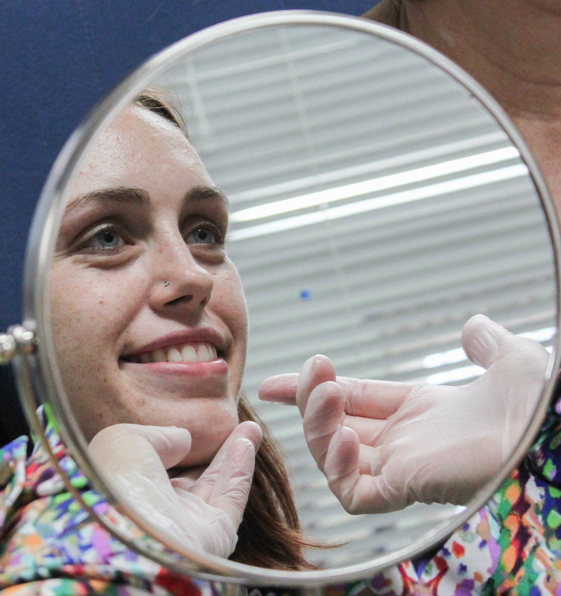
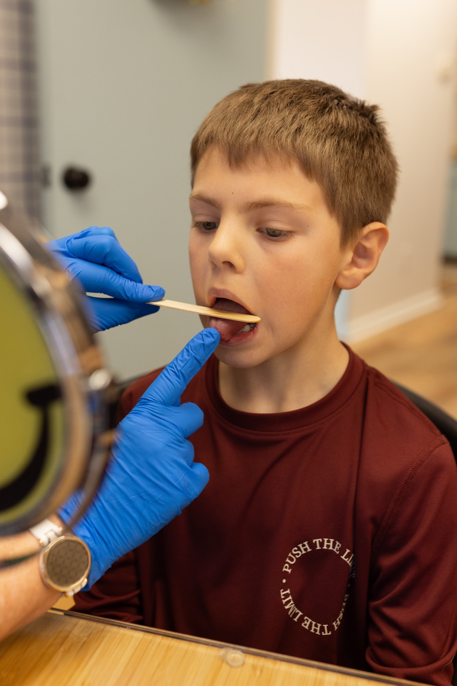
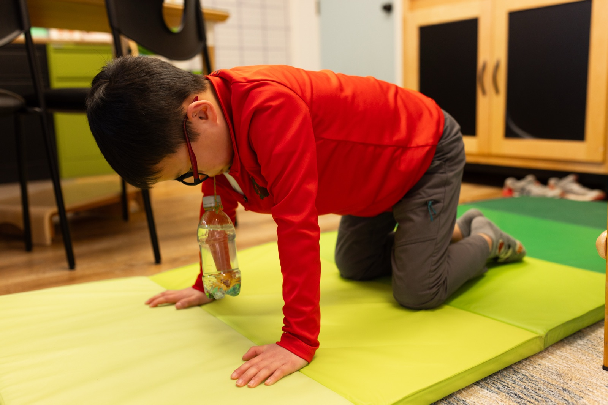
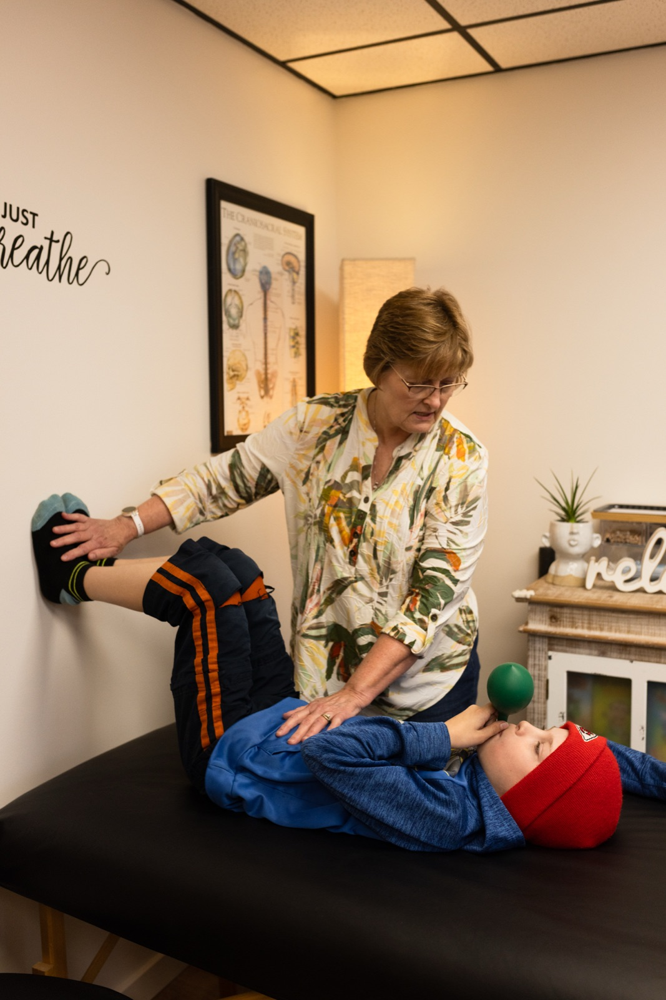
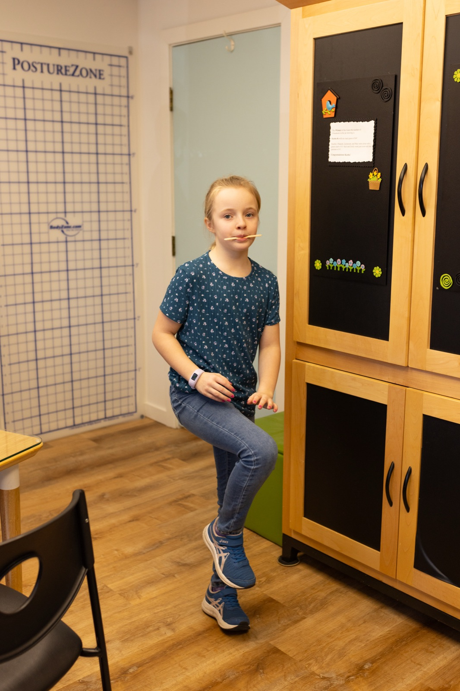
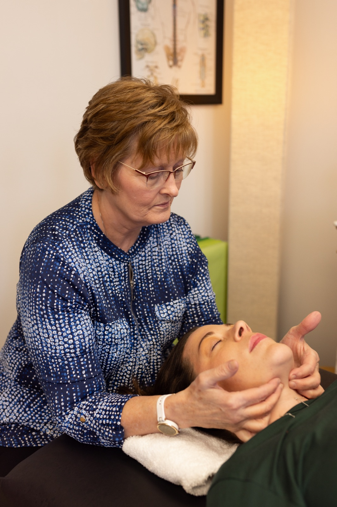

Orofacial Myofunctional Therapy (OMT)
OMT re-educates the muscles of the mouth, tongue, and face to restore correct rest posture and function. Rather than masking symptoms, it corrects the underlying dysfunction through three progressive phases.
Identify and establish
Evaluate etiologies and establish proper nasal breathing, head/neck posture, diaphragmatic breathing, and core stabilization.
Build tone and coordination
Targeted exercises develop muscle tone and consciously coordinate newly formed movements to create the foundation for lasting change.
Make it automatic
Correct tongue posture, closed-lip breathing, and proper swallowing become subconscious habits — the goal of every therapy plan.



A few of the targeted exercises used to build tone, coordination, and correct breathing.
Complementary modalities Kathleen incorporates
Over her career, Kathleen has identified deep overlaps between OMT and several complementary disciplines. She integrates all of them when they serve the patient's needs.
Craniosacral Therapy
A light-touch, hands-on approach (Upledger Institute trained) that releases fascial restrictions in the tongue, jaw, head, and neck — enhancing OMT outcomes. Particularly beneficial for nursing mothers and infants.
Buteyko Breathing
Kathleen is trained in the Buteyko Method (Patrick McKeown). Buteyko teaches nasal, diaphragmatic breathing strategies that reduce snoring, improve sleep, and support orofacial health long-term.
Primitive Reflex Integration
Retained reflexes from infancy can interfere with orofacial development, attention, and coordination. Kathleen is a "Core in Training" student in MNRI — working toward certification — and trained in Rhythmic Movement Training to address these underlying neurological gaps.
Postural & Myofascial Work
Studies with the Postural Restoration Institute (PRI) — including independent study with a PRI specialty-trained physical therapist (PT), Dr. Matt Stensrud — Restorative Breathing (Laynee), and John Kelly (MPT) on myofascial release inform Kathleen's whole-body perspective on orofacial dysfunction.


A whole-body approach: reflex integration and hands-on bodywork complement the oral exercises.
"I feel that I have found multiple overlaps in the intended results of these specialties, and that my cumulative years in practice make me a more rounded therapist."
— Kathleen M. Elder, RDH (Retired), COM